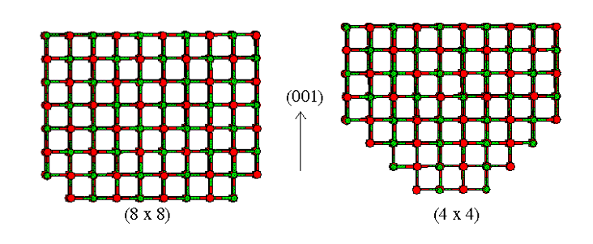
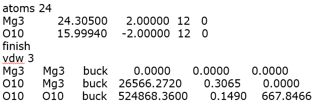
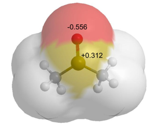
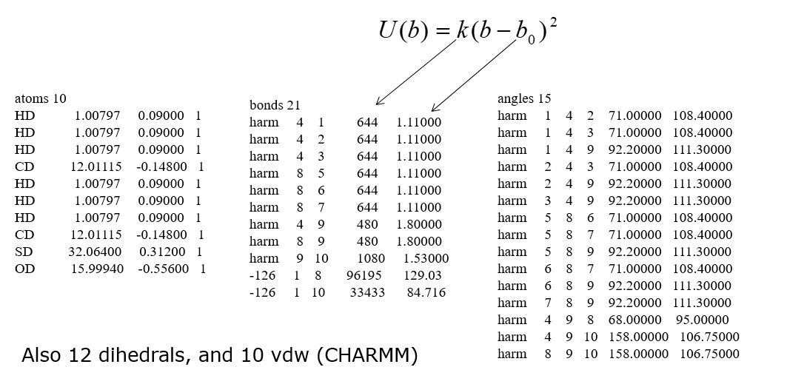

Model examples¶
For inorganic materials such as simple ionic crystals, only a few parameters are needed to accurately model the system.
For example, the diagram below shows a set of potential parameters for a magnesium oxide crystal. It is highly ionic and there are no covalent bonds. This means the total energy of the system consists of just non-bonded components:
{kind=link}
with
The corresponding FF parameters are shown below (in the form of a DL_POLY FIELD file).
{kind=link}
The magnesium cation is assigned with a charge of +2 and the oxide anion with a charge of -2, while three vdW parameter sets using the Buckingham potential are assigned to account for all three possible pairwise combinations: Mg…Mg, Mg…O and O…O.
Note
Mg3 and O10 as shown above are just atom labels for the magnesium and oxygen respectively. There are also no vdW interactions for the Mg…Mg pair (where the parameters are set to zero). The pair would repel naturally from each other due to the strong electrostatic charge.

Unlike ionic crystals, FF models for organic molecules contain many more parameters since \(V_{bonded}\) is needed to maintain the structure of the molecule.
Take, for example, dimethyl sulfoxide, a small organic molecule which is commonly used as a solvent.
{kind=link}
In this case, all bonded interactions would need to take into account.
A section of the potential parameters (in DL_POLY’s FIELD file format) for CHARMM FF is shown below.
{kind=link}
Note the large number of parameters needed even for a small molecule. While manual entry of parameters can be trivial for simple ionic crystals, large covalent molecules need some utility programs, such as DL_FIELD, to help set up the FF models correctly.